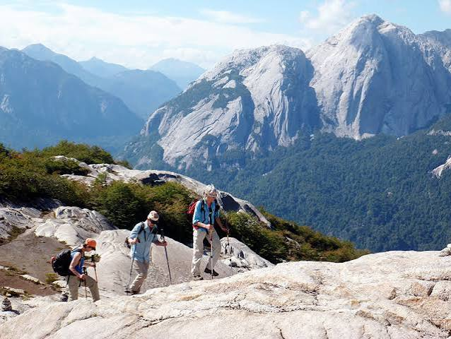
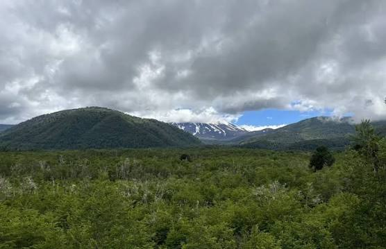
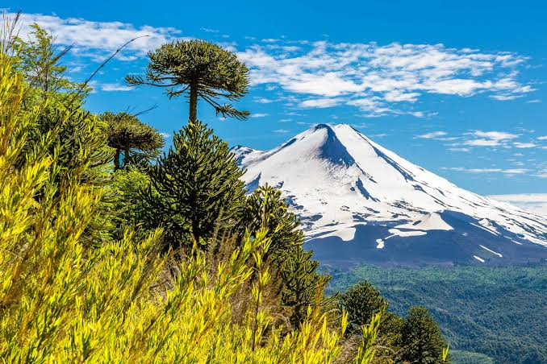
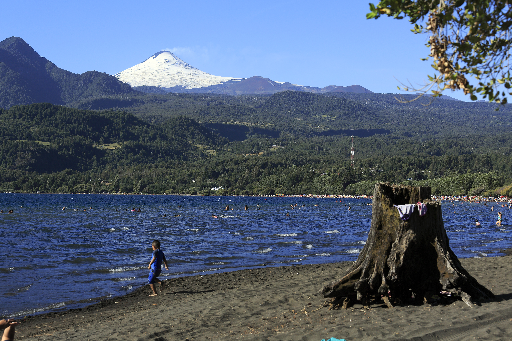

Villarrica
Disfruta de los paisajes del lago Villarrica y de las vistas del volcán.
 EcoRuta
EcoRuta

Disfruta de los paisajes del lago Villarrica y de las vistas del volcán.

Conoce un destino rodeado de naturaleza, montañas y actividades al aire libre.

Explora bosques de araucarias y paisajes naturales característicos de la región.

Descubre el entorno del lago Calafquén y sus paisajes naturales.